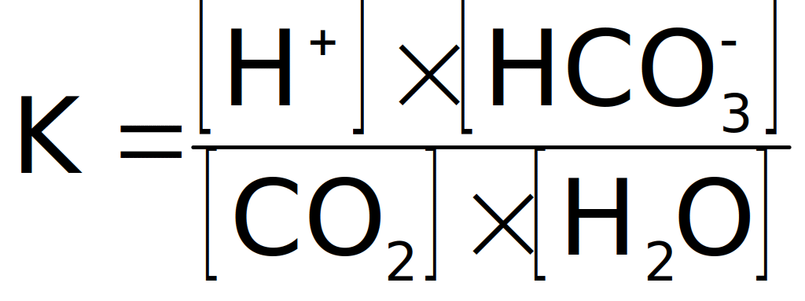

<!DOCTYPE HTML PUBLIC "-//W3C//DTD HTML 4.0 Transitional//EN">
<html>
<head>
	<meta http-equiv="content-type" content="text/html; charset=utf-8"/>
	<title>1. Defining a bivariate reference region on a 2-D acid-base data set</title>
	<meta name="generator" content="LibreOffice 6.0.7.3 (Linux)"/>
	<meta name="author" content="Marcel Hekking"/>
	<meta name="created" content="1999-09-05T15:47:00"/>
	<meta name="changedby" content="Marcel Hekking"/>
	<meta name="changed" content="1999-09-06T09:06:00"/>
	<style type="text/css">
		@page { margin-right: 0.89in; margin-top: 0.79in; margin-bottom: 0.79in }
		p { margin-bottom: 0.1in; direction: ltr; color: #000000; line-height: 115%; text-align: justify; orphans: 2; widows: 2 }
		p.western { font-family: "Garamond", serif; font-size: 14pt; so-language: en-GB }
		p.cjk { font-family: "Times New Roman", serif; font-size: 14pt }
		p.ctl { font-family: "Garamond", serif; font-size: 10pt }
		h1 { margin-bottom: 0.04in; direction: ltr; color: #000000; line-height: 100%; text-align: right; orphans: 2; widows: 2 }
		h1.western { font-family: "Garamond", serif; font-size: 72pt; so-language: en-GB; font-weight: normal }
		h1.cjk { font-family: "Times New Roman", serif; font-size: 72pt; font-weight: normal }
		h1.ctl { font-family: "Garamond", serif; font-size: 10pt; font-weight: normal }
		h2 { margin-top: 0.17in; margin-bottom: 0.04in; direction: ltr; color: #000000; line-height: 0.24in; text-align: left; orphans: 2; widows: 2 }
		h2.western { font-family: "Garamond", serif; font-size: 14pt; so-language: en-GB }
		h2.cjk { font-family: "Times New Roman", serif; font-size: 14pt }
		h2.ctl { font-family: "Garamond", serif; font-size: 10pt; font-weight: normal }
		h3 { margin-top: 0.17in; margin-bottom: 0.04in; direction: ltr; color: #000000; line-height: 0.24in; text-align: justify; orphans: 2; widows: 2 }
		h3.western { font-family: "Garamond", serif; so-language: en-GB; font-style: italic; font-weight: normal }
		h3.cjk { font-family: "Times New Roman", serif; font-style: italic; font-weight: normal }
		h3.ctl { font-family: "Garamond", serif; font-size: 10pt; font-weight: normal }
	</style>
</head>
<body lang="en-US" text="#000000" dir="ltr">
<div title="header">
	<p lang="en-GB" align="right" style="margin-bottom: 0.35in; font-variant: small-caps; line-height: 0.24in">
	<font size="3" style="font-size: 12pt">General introduction</font></p>
</div>
<h1 lang="en-GB" class="western" style="border-top: none; border-bottom: none; border-left: none; border-right: 1px solid #000000; padding-top: 0in; padding-bottom: 0in; padding-left: 0in; padding-right: 0.06in"><a name="_Ref409339520"></a><a name="_Ref422819734"></a><a name="_Ref450563576"></a><a name="_Ref450561719"></a>
1<br/>
		<font size="4" style="font-size: 16pt"><b>General
introduction</b></font></h1>
<p lang="en-GB" class="western" style="margin-bottom: 0in; line-height: 0.24in">
<br/>

</p>
<p lang="en-GB" style="margin-bottom: 0in; line-height: 0.24in"><br/>

</p>
<p lang="en-GB" class="western" style="margin-bottom: 0in; line-height: 0.24in">
<br/>

</p>
<h2 lang="en-GB" class="western" style="page-break-before: always"><a name="_Ref422721695"></a>
1.1The role of clinical chemistry in medicine</h2>
<p lang="en-GB" class="western" style="margin-bottom: 0in; line-height: 0.24in">
Medicine is an art and a science in the service of fellow human
beings [1]. On the basis of collected empirical data and
information, clinicians select specific diagnoses, rule out other
differential diagnoses and eventually make decisions about which and
how specific therapeutic interventions are made for the benefit and
health of their patients. For a proper interpretation, collected data
and information must be compared with other, already existing, data
and information to assess the exact value of the clinician’s
findings. Moreover, a clinician compares observed medical data of a
patient with knowledge obtained during his or her training as a
clinician and with the experience obtained by working with other
patients.</p>
<p lang="en-GB" class="western" style="margin-bottom: 0in; line-height: 0.24in">
A prerequisite in this paradigm, however, is that collected empirical
data on which the diagnoses of a clinician are based must be as
objective as possible. Clinical chemistry takes a pivotal role in
this in the sense that the chemical characterisation of a patient’s
body fluid is one of the ways in medicine that can provide such
objective data. Since the beginning of this century, clinical
chemistry has evolved into a separate and independent discipline in
the field of medicine [2-4]. Nowadays, most often a single central
clinical chemistry laboratory takes care of the ‘analytical needs’
of one or more hospitals.</p>
<p lang="en-GB" class="western" style="margin-bottom: 0in; line-height: 0.24in">
Tasks of the clinical chemist typically include the improvement of
existing methods of chemical analysis, the development of new
analytical methods and providing the clinician with as much
information as possible on the basis of chemical analyses. Especially
this last task forms the basis of what has become known as
<i>chemometrics</i>, a branch of clinical chemistry that uses
mathematical and statistical methods to extract a maximum of
information from chemical analyses [5, 6].</p>
<p lang="en-GB" class="western" style="margin-bottom: 0in; line-height: 0.24in">
This thesis presents a multivariate chemometric approach to the
problems that are currently associated with the interpretation and
evaluation of those laboratory measurements that are used to assess
the arterial acid-base status of a patient in an intensive care unit
(ICU).</p>
<h2 lang="en-GB" class="western">1.2Arterial acid-base measurements
in the ICU</h2>
<p lang="en-GB" class="western" style="margin-bottom: 0in; line-height: 0.25in">
The ICU of today is a highly specialised ward in which expert
medical, nursing and technical staff provides medical services to
severely ill patients. It is characterised as a high-tech environment
in which the real-time monitoring of vital functions plays a central
role. The origin of the ICU can be traced back to the second half of
the 19<sup>th</sup> century when special rooms, adjacent to the
operating room, were used primarily for the purpose of postoperative
care [7]. In the course of time, these recovery rooms evolved into
specialised respiratory care units and shock and trauma units,
eventually leading to the present day ICU. The modern ICU provides
integrated cardiopulmonary support for both medical and surgical
patients suffering from severe respiratory and / or cardiac problems
as a result of disease or trauma.</p>
<p lang="en-GB" class="western" style="margin-bottom: 0in; line-height: 0.24in">
The most frequently ordered chemical test in the ICU is the arterial
blood gas measurement [8]. Arterial blood gas measurements comprise
those measurements of the patient’s arterial blood that are used
for the evaluation and interpretation of the patient’s oxygen and
acid-base status. Basic arterial blood gas measurements include: the
partial pressure of oxygen (PaO<sub>2</sub>), the oxygen saturation
of haemoglobin, the pH of arterial blood, the partial pressure of
carbon dioxide (PaCO<sub>2</sub>) and the bicarbonate-ion
concentration (a[<font face="Animals, sans-serif">
</font>]).
The first two measurements (PaO<sub>2</sub> and oxygen saturation)
are used to evaluate the oxygen status, while the other three are
used for the interpretation of the arterial acid-base status.</p>
<p lang="en-GB" class="western" style="margin-bottom: 0in; line-height: 0.24in">
In a strict sense, the term blood gas measurements is incorrect,
since only PaO<sub>2</sub> and PaCO<sub>2</sub> are true gas
measurements and in modern chemical analysers a[<font face="Animals, sans-serif">
</font>]
is not measured but calculated from measured pH and PaCO<sub>2</sub>.
Moreover, two other derived acid-base parameters are generally
considered part of the set of arterial blood gas measurements. These
parameters are the standard bicarbonate-ion concentration (SB) and
the base excess (BE). Their derivation and rationale are described in
section 1.4.3 in more detail.</p>
<p lang="en-GB" class="western" style="margin-bottom: 0in; line-height: 0.24in">
Since the second half of this century, the analysis of arterial blood
for the purpose of acid-base characterisation has become a vital part
of intensive care medicine. The importance of the acid-base
characterisation of arterial blood is illustrated by the severe polio
epidemic that struck Copenhagen (Denmark) in 1952 [9]. During this
epidemic, hospitals in Copenhagen had to cope with a large number of
patients needing intensive artificial respiration as a result of
paralysis of the respiratory muscles. For a proper setting of the
artificial respiration, the complete acid-base status of the patient
had to be known. At that time, arterial blood of patients was seldom
sampled for the purpose of performing blood gas measurements [10].
Arterial blood gas measurements were mainly performed in
physiological laboratories and were not part of daily clinical
practice. Techniques of measurement were cumbersome and needed large
equipment.</p>
<p lang="en-GB" class="western" style="margin-bottom: 0in; line-height: 0.24in">
The clinical necessity of quickly knowing the patient’s arterial
acid-base status for the purpose of a proper adjustment of the
artificial respiration inspired Poul Astrup to develop his
equilibration method [9]. This method allowed a relatively quick
determination of the three basic acid-base parameters by only
measuring the pH of an arterial blood sample and the pH of the sample
equilibrated at two known PaCO<sub>2</sub> gas tensions. The original
PaCO&shy;<sub>2</sub> is calculated by interpolation [11, 12].
Since then, techniques of analysis developed and arterial acid-base
measurements have become routine and indispensable in the daily
clinical care of intensive care patients.</p>
<h2 lang="en-GB" class="western">1.3Basic acid-base physiology</h2>
<p lang="en-GB" class="western" style="margin-bottom: 0in; line-height: 0.24in">
In chemical terms, acids are substances that are capable of donating
hydrogen (<font face="Playbill, LcdD, fantasy">
</font>)
ions while bases are substances capable of accepting <font face="Playbill, LcdD, fantasy">

</font>
ions. The amount of <font face="Playbill, LcdD, fantasy">

</font><sup>
</sup>ions in the arterial blood determines its actual acidity.
Acidity is measured as pH, which is, according to the definition of
Sörensen, the negative logarithm of the <font face="Playbill, LcdD, fantasy">

</font>
concentration ([<font face="Playbill, LcdD, fantasy">
</font>])
[9].</p>
<p lang="en-GB" class="western" style="margin-bottom: 0in; line-height: 0.24in">
The regulation of the amount of <font face="Playbill, LcdD, fantasy">

</font>
ions in the arterial blood and consequently its pH is one of the most
powerful controlling mechanisms in the human body. Under normal
physiologic conditions, the pH of arterial blood is kept within
well-defined limits. This tight regulation of the <font face="Playbill, LcdD, fantasy">

</font>
concentration in arterial blood is essential since <font face="Playbill, LcdD, fantasy">

</font>
ions are highly reactive with negatively charged parts of molecules.
Changes in <font face="Playbill, LcdD, fantasy">

</font>
concentration (intra-cellular as well as extra-cellular) therefore
have a profound influence on the molecular configuration and
consequently on protein function [13]. Hence, maintaining a
constant pH ensures an optimal working condition for enzymes and
other proteins. Moreover, large deviations in pH may have effects on
the nervous system. If the body becomes too acidic, the nervous
system can become so depressed that death can occur. On the other
hand, if the body becomes too alkaline, the nervous system can become
overexcited, resulting in death from tetanus of the respiratory
muscle [14].</p>
<p lang="en-GB" class="western" style="margin-bottom: 0in; line-height: 0.24in">
Two mechanisms exist to regulate pH of arterial blood: long term
physiological buffering and short term chemical buffering.
Physiological buffering is the redistribution, production, excretion
and/or retention of (non-)volatile acids and bases by means of
physiological processes. Chemical buffering is the result of the
presence of weak acids and their conjugated bases in the arterial
blood. Examples of chemical buffers in arterial blood are: inorganic
phosphate, organic phosphate and haemoglobin.</p>
<p lang="en-GB" class="western" style="margin-bottom: 0in; line-height: 0.24in">
One of the most important chemical buffer systems in the blood,
however, is the bicarbonate ion (
)/carbon
dioxide (CO<sub>2</sub>) buffer system. It is mainly the presence of
this buffer system that makes it possible for the human body to cope
with the constant load of exogenous acids and bases and the vast
amount of both volatile and non-volatile acids that are continuously
generated as a result of normal metabolism.</p>
<p lang="en-GB" class="western" style="margin-bottom: 0in; line-height: 0.24in">
The equation describing the <font face="HomePlanning, sans-serif">

</font>/CO<sub>2</sub>
buffer system in blood is:</p>
<p lang="en-GB" style="margin-top: 0.08in; margin-bottom: 0.08in; line-height: 0.17in; page-break-inside: avoid; page-break-after: avoid">
	
	(<span lang="en-US">1</span>–1)</p>
<p lang="en-GB" class="western" style="margin-bottom: 0in; line-height: 0.24in">
The left-hand side of this chemical reaction represents the formation
of carbonic acid (H<sub>2</sub>CO<sub>3</sub>) from CO<sub>2</sub>
and H<sub>2</sub>O. Therefore, although CO<sub>2</sub> itself is not
an acid, an elevation of the CO<sub>2</sub> in the blood increases
the acidity of the blood through the formation of H<sub>2</sub>CO<sub>3</sub>
which immediately dissociates into protons (<font face="Playbill, LcdD, fantasy">
</font>)
and bicarbonate ions (
).</p>
<p lang="en-GB" class="western" style="margin-bottom: 0in; line-height: 0.24in">
Since the concentration of H<sub>2</sub>CO<sub>3</sub> is so low in
relation to the concentration of dissolved CO<sub>2</sub> and the
concentration of <font face="HomePlanning, sans-serif">

</font>,
the law of mass action for the 

/CO<sub>2</sub>
buffer system is:</p>
<p lang="en-GB" style="margin-top: 0.08in; margin-bottom: 0.08in; line-height: 0.17in; page-break-inside: avoid; page-break-after: avoid">
	
,	(<span lang="en-US">1</span>–2)</p>
<p lang="en-GB" class="western" style="margin-bottom: 0in; line-height: 0.24in">
where K is a constant.</p>
<p lang="en-GB" class="western" style="margin-bottom: 0in; line-height: 0.24in">
Because [H<sub>2</sub>O] is relatively constant in body fluids, it
can be omitted from the equation and incorporated into the constant
K, further indicated as K' [13]. Rewriting the resulting equation
to solve [<font face="Playbill, LcdD, fantasy">
</font>]
yields the equation that Lawrence Joseph Henderson (1878-1942) first
described in 1909 [10]:</p>
<p lang="en-GB" style="margin-top: 0.08in; margin-bottom: 0.08in; line-height: 0.17in; page-break-inside: avoid; page-break-after: avoid">
	
	(<span lang="en-US">1</span>–3)</p>
<p lang="en-GB" class="western" style="margin-bottom: 0in; line-height: 0.24in">
The concentration of dissolved CO<sub>2</sub> in blood ([CO<sub>2</sub>])
is proportional to the partial pressure of CO<sub>2</sub> (PCO<sub>2</sub>)
in the gas with which the blood is in equilibrium. Therefore, [CO<sub>2</sub>]<font face="Kino MT, LcdD, fantasy">
</font>can be replaced by the partial pressure of CO<sub>2</sub> in
the blood. Partial pressures are either measured in millimetres
mercury (mmHg) or kilo-Pascal (kPa) where 1 mmHg = 0.133 kPa. The
constant relating [CO<sub>2</sub>] in mmol/l to the PCO<sub>2</sub>
is called the solubility constant. The solubility constant for [CO<sub>2</sub>]
in plasma is 0.03 mmol per litre per mmHg or 0.225 mmol per litre per
kPa.</p>
<p lang="en-GB" class="western" style="margin-bottom: 0in; line-height: 0.24in">
Moreover, applying the pH concept of Sörensen, in 1917 Karl Albert
Hasselbalch (1874-1962) introduced the Henderson-Hasselbalch
equation:</p>
<p lang="en-GB" style="margin-top: 0.08in; margin-bottom: 0.08in; line-height: 0.17in; page-break-inside: avoid; page-break-after: avoid"><a name="Equation_Henderson_Hasselbalch"></a><a name="_Ref422637097"></a>
	
,	(<span lang="en-US">1</span>–4)</p>
<p lang="en-GB" class="western" style="margin-bottom: 0in; line-height: 0.24in">
where pK' = 6.10 and <font face="Symbol, serif"></font> is the
solubility constant for [CO<sub>2</sub>] in plasma.</p>
<p lang="en-GB" class="western" style="margin-bottom: 0in; line-height: 0.24in">
From equation  1 –4 it is apparent that pH is the resultant of the
ratio a[<font face="Animals, sans-serif">
</font>]/P<span style="font-variant: small-caps">CO</span><sub>2</sub>.
Both P<span style="font-variant: small-caps">CO</span><sub>2</sub>
and a[<font face="Animals, sans-serif">
</font>]
can effectively be regulated by lungs and kidneys, respectively
[15]. This feature in particular makes the <font face="Animals, sans-serif">

</font>/CO<sub>2</sub>
buffer system so effective in maintaining a constant arterial blood
pH. Knowing pH, PCO&shy;&shy;<sub>2</sub> and a[<font face="Animals, sans-serif">
</font>]
in the arterial blood of a patient is vital when interpreting the
acid-base status of arterial blood. It gives information on both the
respiratory and metabolic component of an acid-base disturbance and
their joint effect on the acidity of the arterial blood. 
</p>
<p lang="en-GB" class="western" style="margin-bottom: 0in; line-height: 0.24in">
Although Sörensen introduced the electrochemical measurement of <font face="Playbill, LcdD, fantasy">


</font>ions as early as in 1909, it was not until 1932 that pH glass
electrodes were produced commercially and used on a regular basis.
Before that time, pH of blood was indirectly obtained from measuring
total CO<sub>2</sub> and P<span style="font-variant: small-caps">CO</span><sub>2</sub>
in the blood with the manometric Van Slyke apparatus that Donald
Dexter van Slyke (1883-1971) introduced in 1924 [9]. Around 1960
the CO<sub>2</sub> electrode was introduced into clinical chemistry.
Today, chemical analysers measure pH and PCO<sub>2</sub> and
calculate [<font face="Animals, sans-serif">
</font>]
with the use of the Henderson-Hasselbalch equation (see Equation<span lang="en-US">
 1 –4</span>).</p>
<h2 lang="en-GB" class="western">1.4The clinical interpretation of
acid-base parameters</h2>
<p lang="en-GB" class="western" style="margin-bottom: 0in; line-height: 0.24in">
An impairment in either the respiratory or metabolic function (or
both) of the body may result in so-called acid-base disturbances
[13]. For a proper treatment of these disturbances it is essential
for an ICU clinician to be aware of the exact acid-base status of the
arterial blood of an ICU patient. With the analysis of measured and
calculated arterial acid-base parameters, the ICU clinician aims to
find the underlying cause(s) of one or more acid-base disturbances in
order to remove it with specific therapeutic interventions. Moreover,
for patients receiving artificial respiration, the acid-base analysis
of arterial blood is essential for setting the kind and degree of
artificial respiration.</p>
<h3 lang="en-GB" class="western">1.4.1General nomenclature and
terminology</h3>
<p lang="en-GB" class="western" style="margin-bottom: 0in; line-height: 0.24in">
Acid-base disorders can be divided into <i>primary</i>, <i>secondary</i>
and <i>combined</i> acid-base disturbances. Primary acid-base
disturbances are the result of impairment of either the respiratory
function or the metabolic function of the body. Impairments of the
respiratory function result in primary <i>respiratory</i> acid-base
disturbances, whereas impairments in metabolic function result in
<i>non-respiratory</i> or <i>metabolic</i> disturbances. Both
respiratory and metabolic disturbances can be further divided into
disturbances that tend to lower the pH, resulting in <i>acidemia</i>,
and disturbances that tend to raise the pH, resulting in <i>alkalemia</i>.
These acid-base disturbances are called <i>acidoses</i> and
<i>alkaloses</i>, respectively. Hence, the terms acidosis and
alkalosis refer to underlying pH-deranging physiologic processes,
whereas the terms acidemia and alkalemia merely indicate the actual
acidity of arterial blood. Multiple single primary acid-base
disturbances can be present at the same time, resulting in <i>combined</i>
acid-base disturbances.</p>
<p lang="en-GB" class="western" style="margin-bottom: 0in; line-height: 0.24in">
Moreover, as a response to primary acid-base disorders, the human
body is capable of initiating compensating mechanisms. Primary
respiratory disturbances trigger mechanisms in the kidneys that
actively regulate the reabsorbtion of excreted <font face="HomePlanning, sans-serif">

</font>
ions, thereby inducing metabolic compensating effects. Also, primary
metabolic dysfunction eventually triggers the breathing centre,
resulting in an adjustment of the respiration and consequently the
PaCO<sub>2</sub>. These compensating processes result in <i>secondary</i>
acid-base disturbances. The capability of the body to compensate for
primary acid-base disturbances prevents large changes in the pH of
arterial blood even though pathological processes may be present.</p>
<p lang="en-GB" class="western" style="margin-bottom: 0in; line-height: 0.24in">
Respiratory compensations are very rapid and effective within
minutes, while metabolic compensations can take up to three days to
be fully effective. A metabolic compensation can, however, when in
full working order, completely compensate a primary respiratory
disturbance, while a respiratory compensation can only partially
compensate primary metabolic acid-base disturbances.</p>
<p lang="en-GB" class="western" style="margin-bottom: 0in; line-height: 0.24in">
It is apparent that for a proper treatment of an acid-base
disturbance, the complete acid-base status of a patient should be
known to a clinician. Although the body can compensate primary
acid-base disturbances to a certain extent, therapeutic measurements
must be taken as soon as possible to eliminate any primary acid-base
disturbance. Moreover, severely ill patients on the ICU most often
receive some form of artificial respiration. Being on mechanical
ventilation means that the body cannot fully employ respiratory
compensating mechanisms, making the ICU clinician even more
responsible for keeping the pH of the arterial blood within
acceptable boundaries.</p>
<p lang="en-GB" class="western" style="margin-bottom: 0in; line-height: 0.24in">
For most ICU patients, an arterial blood gas analysis is performed on
a routine basis, for instance every 3 or 6 hours. However, the
interpretation of acid-base data is still regarded as difficult since
several pieces of information must be evaluated at the same time in
their clinical context. Multiple primary disturbances can be present
at the same time, concealed by various degrees of compensation,
making the diagnosis and monitoring of acid-base data a complex task.</p>
<p lang="en-GB" class="western" style="margin-bottom: 0in; line-height: 0.24in">
This complexity is illustrated by the coexistence of two distinct
methods for interpreting arterial acid-base parameters. One method
uses <i>in vivo</i> information to interpret pH, Pa<span style="font-variant: small-caps">CO</span><sub>2</sub>
and a[<font face="Animals, sans-serif">
</font>],
while the other method makes use of pH, Pa<span style="font-variant: small-caps">CO</span><sub>2</sub>
and a calculated <i>in vitro</i> parameter called base excess (BE).
This latter method was developed around 1960 by Poul Astrup and Ole
Siggaard-Andersen from Denmark and is therefore also known as the
<i>Scandinavian view</i> [16].</p>
<p lang="en-GB" class="western" style="margin-bottom: 0in; line-height: 0.24in">
Schwartz and Relman of the Tufts University School of Medicine in
Boston (USA) criticised the <i>in vitro</i> approach and made a case
for pH, Pa<span style="font-variant: small-caps">CO</span><sub>2</sub>
and a[<font face="Animals, sans-serif">
</font>]
[17]. This method is therefore also known as the <i>North American
view</i>. The controversy between the two schools, which Bunker
called ‘The Great Trans-Atlantic Acid-Base Debate’, still exists
today, although many attempts were made to bridge the gap [16,
18-22].</p>
<h3 lang="en-GB" class="western">1.4.2The North American view; a[<font face="Animals, sans-serif">
</font>]
and in vivo CO<sub>2</sub><span style="font-style: normal"> </span>buffer
lines</h3>
<p lang="en-GB" class="western" style="margin-bottom: 0in; line-height: 0.24in">
In the North American view, a high value of Pa<span style="font-variant: small-caps">CO</span><sub>2</sub>
indicates a primary respiratory acidosis or a respiratory
compensation for a metabolic alkalosis, while a low value of Pa<span style="font-variant: small-caps">CO</span><sub>2</sub>
indicates a primary respiratory alkalosis or a respiratory
compensation for a primary metabolic acidosis. The metabolic
component of an acid-base status is assessed with a[<font face="Animals, sans-serif">
</font>].
A high value of a[<font face="Animals, sans-serif">
</font>]
indicates a primary metabolic alkalosis or a metabolic compensation
for a primary respiratory acidosis while a low a[<font face="Animals, sans-serif">
</font>]
indicates a primary metabolic acidosis or a metabolic compensation
for a primary respiratory acidosis. However, a[<font face="Animals, sans-serif">
</font>]
cannot be used as a true metabolic parameter, since changes in PaCO<sub>2</sub>
also effect a[<font face="Animals, sans-serif">
</font>].</p>
<p lang="en-GB" class="western" style="margin-bottom: 0in; line-height: 0.24in">
The concept of the North American view is that <i>in vivo</i> data is
used to calculate the expected rise or fall in a[<font face="Animals, sans-serif">
</font>]
and/or PaCO<sub>2</sub> that occur in specific acid-base disorders.
The empirically derived<i> in vivo</i> information has been compiled
from a large number of clinical studies in which the normal
compensatory reactions to each of the primary acid-base disorders has
been investigated and quantified [23-30]. An observed value of a[<font face="Animals, sans-serif">
</font>]
or PaCO<sub>2</sub> below or above the expected value of a[<font face="Animals, sans-serif">
</font>]
or PaCO<sub>2</sub> is an indication for the presence and nature of a
metabolic component or respiratory component of an acid-base
disorder. Table  1 –1 presents the empirically found expected
compensatory rise and fall in a[<font face="Animals, sans-serif">
</font>]
and PaCO<sub>2 </sub>for the primary acid-base disturbances.</p>
<h3 lang="en-GB" class="western"><a name="_Ref465427843"></a>1.4.3<span id="Frame1" dir="ltr" style="position: absolute; top: 0in; left: 0in; width: 6.5in; height: 0.02in; border: none; padding: 0in; background: #ffffff">
	<p lang="en-GB" style="margin-bottom: 0.08in; line-height: 0.21in; page-break-after: avoid"><a name="_Ref436284017"></a><a name="_Ref439079464"></a><a name="_Ref439079410"></a><a name="_Ref439078398"></a><a name="_Ref412603865"></a>
	<font size="3" style="font-size: 12pt"><i>Table <span lang="en-US">1</span>–1.
	Compensations to primary acid-base disturbances in the North
	American view [13].</i></font></p>
	<center>
		<table dir="ltr" width="624" cellpadding="7" cellspacing="0">
			<col width="147">
			<col width="93">
			<col width="342">
			<tbody>
				<tr valign="top">
					<td width="147" height="37" style="border-top: 1px solid #000000; border-bottom: 1px solid #000000; border-left: none; border-right: none; padding: 0in">
						<p lang="en-GB" align="center" style="background: #ffffff">disorder</p>
					</td>
					<td width="93" style="border-top: 1px solid #000000; border-bottom: 1px solid #000000; border-left: none; border-right: none; padding: 0in">
						<p lang="en-GB" align="center" style="background: #ffffff">primary
						change</p>
					</td>
					<td width="342" style="border-top: 1px solid #000000; border-bottom: 1px solid #000000; border-left: none; border-right: none; padding: 0in">
						<p lang="en-GB" align="center" style="background: #ffffff">compensatory
						response</p>
					</td>
				</tr>
			</tbody>
			<tbody>
				<tr valign="top">
					<td width="147" height="38" style="border: none; padding: 0in">
						<p lang="en-GB" align="left" style="background: #ffffff">metabolic
						acidosis</p>
					</td>
					<td width="93" style="border: none; padding: 0in">
						<p lang="en-GB" align="center" style="background: #ffffff">
						a[<font face="Animals, sans-serif">
</font>]</p>
					</td>
					<td width="342" style="border: none; padding: 0in">
						<p lang="en-GB" align="center" style="background: #ffffff">1.2
						mmHg decrease in PaCO<sub>2</sub> for every 1 mmol/l fall in
						a[<font face="Animals, sans-serif">
</font>]</p>
					</td>
				</tr>
				<tr valign="top">
					<td width="147" style="border: none; padding: 0in">
						<p lang="en-GB" align="left" style="background: #ffffff">metabolic
						alkalosis</p>
					</td>
					<td width="93" style="border: none; padding: 0in">
						<p lang="en-GB" align="center" style="background: #ffffff">
						a[<font face="Animals, sans-serif">
</font>]</p>
					</td>
					<td width="342" style="border: none; padding: 0in">
						<p lang="en-GB" align="center" style="background: #ffffff">0.7
						mmHg elevation in PaCO<sub>2  </sub>for every 1 mmol/l rise in
						a[<font face="Animals, sans-serif">
</font>]</p>
					</td>
				</tr>
				<tr valign="top">
					<td width="147" style="border: none; padding: 0in">
						<p lang="en-GB" align="left" style="background: #ffffff">respiratory
						acidosis</p>
					</td>
					<td width="93" style="border: none; padding: 0in">
						<p lang="en-GB" align="center" style="background: #ffffff">
						PaCO<sub>2</sub></p>
					</td>
					<td width="342" style="border: none; padding: 0in">
						<p lang="en-GB" align="center" style="background: #ffffff"><br/>

						</p>
					</td>
				</tr>
				<tr valign="top">
					<td width="147" style="border: none; padding: 0in">
						<p lang="en-GB" align="left" style="margin-left: 0.32in; background: #ffffff">
						acute</p>
					</td>
					<td width="93" style="border: none; padding: 0in">
						<p lang="en-GB" align="center" style="background: #ffffff"><br/>

						</p>
					</td>
					<td width="342" style="border: none; padding: 0in">
						<p lang="en-GB" align="center" style="background: #ffffff">1
						mmol/l elevation in a[<font face="Animals, sans-serif">
</font>]
						for every 10 mmHg rise in PaCO<sub>2</sub></p>
					</td>
				</tr>
				<tr valign="top">
					<td width="147" style="border: none; padding: 0in">
						<p lang="en-GB" align="left" style="margin-left: 0.32in; background: #ffffff">
						chronic</p>
					</td>
					<td width="93" style="border: none; padding: 0in">
						<p lang="en-GB" align="center" style="background: #ffffff"><br/>

						</p>
					</td>
					<td width="342" style="border: none; padding: 0in">
						<p lang="en-GB" align="center" style="background: #ffffff">3.5
						mmol/l elevation in a[<font face="Animals, sans-serif">
</font>]
						for every 10 mmHg rise in PaCO<sub>2</sub></p>
					</td>
				</tr>
				<tr valign="top">
					<td width="147" style="border: none; padding: 0in">
						<p lang="en-GB" align="left" style="background: #ffffff">respiratory
						alkalosis</p>
					</td>
					<td width="93" style="border: none; padding: 0in">
						<p lang="en-GB" align="center" style="background: #ffffff">
						PaCO<sub>2</sub></p>
					</td>
					<td width="342" style="border: none; padding: 0in">
						<p lang="en-GB" align="center" style="background: #ffffff"><br/>

						</p>
					</td>
				</tr>
				<tr valign="top">
					<td width="147" style="border: none; padding: 0in">
						<p lang="en-GB" align="left" style="margin-left: 0.32in; background: #ffffff">
						acute</p>
					</td>
					<td width="93" style="border: none; padding: 0in">
						<p lang="en-GB" align="center" style="background: #ffffff"><br/>

						</p>
					</td>
					<td width="342" style="border: none; padding: 0in">
						<p lang="en-GB" align="center" style="background: #ffffff">2
						mmol/l decrease in a[<font face="Animals, sans-serif">
</font>]
						for every 10 mmHg fall in PaCO<sub>2</sub></p>
					</td>
				</tr>
				<tr valign="top">
					<td width="147" height="38" style="border-top: none; border-bottom: 1px solid #000000; border-left: none; border-right: none; padding: 0in">
						<p lang="en-GB" align="left" style="margin-left: 0.32in; background: #ffffff">
						chronic</p>
					</td>
					<td width="93" style="border-top: none; border-bottom: 1px solid #000000; border-left: none; border-right: none; padding: 0in">
						<p lang="en-GB" align="center" style="background: #ffffff"><br/>

						</p>
					</td>
					<td width="342" style="border-top: none; border-bottom: 1px solid #000000; border-left: none; border-right: none; padding: 0in">
						<p lang="en-GB" align="center" style="background: #ffffff">5
						mmol/l decrease in a[<font face="Animals, sans-serif">
</font>]
						for every 10 mmHg fall in PaCO<sub>2</sub></p>
					</td>
				</tr>
			</tbody>
		</table>
	</center>
	<p lang="en-GB" align="center" style="margin-bottom: 0in; line-height: 0.24in">
	<br/>

	</p>
</span>The Scandinavian view; standard bicarbonate and base excess
</h3>
<p lang="en-GB" class="western" style="margin-bottom: 0in; line-height: 0.24in">
The North American view requires calculations to be performed at the
bedside of a patient. Moreover, to predict the amount of rise or fall
in primary acid-base values, the acid-base disturbance of a patient
should be known <i>a priori</i>. To overcome the ‘problems’ of
bedside calculations and the paradox of classifying an already known
acid-base disturbance, Astrup and Siggaard-Andersen developed the
concept of the standard bicarbonate and the base excess as true
metabolic acid-base parameters [11].</p>
<p lang="en-GB" class="western" style="margin-bottom: 0in; line-height: 0.24in">
In 1960, Astrup described his equilibration method for the rapid
measurement and calculation of the primary acid-base parameters pH,
Pa<span style="font-variant: small-caps">CO</span><sub>2</sub> and
a[<font face="Animals, sans-serif">
</font>]
[12 , 31]. In a microtonometer a blood sample is equilibrated with
two known CO<sub>2</sub> gas mixtures, one with a high Pa<span style="font-variant: small-caps">CO</span><sub>2</sub>
and one with a low Pa<span style="font-variant: small-caps">CO</span><sub>2</sub>.
Plotting Pa<span style="font-variant: small-caps">CO</span><sub>2</sub>
and measured pH at both Pa<span style="font-variant: small-caps">CO</span><sub>2</sub>
values in a log Pa<span style="font-variant: small-caps">CO</span><sub>2</sub>–pH
diagram, and connecting the two points with a line yields the <i>in
vitro</i> CO<sub>2</sub> equilibration curve. By measuring pH of the
original blood sample and putting it in the plot, the actual Pa<span style="font-variant: small-caps">CO</span><sub>2</sub>
of the blood sample can be read from the CO<sub>2</sub> equilibration
curve. With the Henderson-Hasselbalch equation a[<font face="Animals, sans-serif">
</font>]
can be calculated.</p>
<p lang="en-GB" class="western" style="margin-bottom: 0in; line-height: 0.24in">
With the log Pa<span style="font-variant: small-caps">CO</span><sub>2</sub>–pH
chart and the <i>in vitro</i> CO<sub>2</sub> equilibration curve of a
patient, a[<font face="Animals, sans-serif">
</font>]
can be calculated at any desired PaCO<sub>2</sub> value. Astrup
proposed to use the a[<font face="Animals, sans-serif">
</font>]
of a blood sample at a Pa<span style="font-variant: small-caps">CO</span><sub>2</sub>
of 40 mmHg as a true metabolic parameter, since this would be the
concentration that would have been found in the blood sample if the
influence of the respiration was eliminated. He called it the
standard bicarbonate concentration or SB.</p>
<p lang="en-GB" class="western" style="margin-bottom: 0in; line-height: 0.24in">
At the same time, Siggaard-Andersen completed his titration
experiments in which he determined the CO<sub>2</sub> equilibration
curves of normal blood and blood with known amounts of non-volatile
acids and bases at a fixed Pa<span style="font-variant: small-caps">CO</span><sub>2</sub>
of 40 mmHg. Based on these experiments he added to the log Pa<span style="font-variant: small-caps">CO</span><sub>2</sub>–pH
diagram of Astrup a curved line representing the amount of
non-volatile acid or base needed to titrate the blood sample at a
Pa<span style="font-variant: small-caps">CO</span><sub>2</sub> of 40
mmHg to a pH of 7.40 at a temperature of 37 °C. Astrup and
Siggaard-Andersen called this the base excess or BE. Positive base
excess values indicate a relative deficit of non-volatile acids while
negative base excess values indicate a relative surplus of
non-volatile acids. A base excess of 0 means that there is no
metabolic component in the acid-base disorder. In modern analysers,
BE is calculated from pH, PaCO<sub>2</sub>, a[<font face="Animals, sans-serif">
</font>]
and the haemoglobin concentration of the arterial blood sample at
hand.</p>
<p lang="en-GB" class="western" style="margin-bottom: 0in; line-height: 0.24in">
The most important argument against the use of standard bicarbonate
and base excess is that they are determined <i>in vitro</i>. The <i>in
vitro</i> CO<sub>2</sub> equilibration curve is the equilibration
curve of whole blood in a tube or syringe. It has been shown that <i>in
vivo</i> buffering of protons is different from the in <i>vitro</i>
buffering of protons [17]. This is mainly because<i> in vivo</i>
buffering takes place in the extracellular fluid in which the
haemoglobin concentration (a powerful chemical buffer) is lower than
in whole blood. Both Siggaard-Andersen himself and Severinghaus
proposed to calculate BE not with the measured haemoglobin
concentration of the sample, but with a haemoglobin concentration of
5 g/dl, which is the Hb concentration relative to the total volume of
extracellular fluid of the body [32, 33]. This BE is also known as
BEecf (Base Excess of extracellular fluid), SBE (Standard Base
Excess) and BE5 (Base Excess at a haemoglobin concentration of 5
g/dl.</p>
<p lang="en-GB" class="western" style="margin-bottom: 0in; line-height: 0.24in">
<span id="Frame2" dir="ltr" style="position: absolute; top: 0in; left: 0in; width: 5.09in; height: 0.02in; border: none; padding: 0in; background: #ffffff">
	<p align="center" style="margin-bottom: 0in; background: #ffffff; line-height: 100%">
	
</p>
	<p lang="en-GB" align="left" style="margin-top: 0.04in; margin-bottom: 0.04in; background: #ffffff; line-height: 0.19in"><a name="_Ref436284071"></a>
	<font size="3" style="font-size: 12pt"><i>Figure <span lang="en-US">1</span>–1.
	Areas of acid-base classification according to the method presented
	in Table  1 –3. Combinations of low, high or normal observed
	values yield 12 specific acid-base disorder regions. In the normal
	region, all values are within their standard 95% normal reference
	intervals. The ‘x’ regions are formally not classifiable [34].
	In these regions, one of the three observed acid-base values is
	outside its 95% univariate reference interval.</i></font></p>
</span><br clear="left">With BE as a true metabolic parameter,
classifying acid-base disturbances is now straightforward.<b> Figure  1 –1
</b>and Table  1 –3 show all possible acid-base classifications
based on pH, PaCO<sub>2</sub> and BE.  To determine whether an
observed value for an acid-base parameter is too low, normal or too
high, standard univariate 95% reference intervals are used.<b> Table  1 –2
</b>presents the associated upper and lower cut-off values for the
univariate 95% reference intervals of arterial pH, PaCO<sub>2</sub>,
BE and a[<font face="Animals, sans-serif">
</font>].</p>
<h2 lang="en-GB" class="western">1.5Objective and scope of this
thesis</h2>
<p lang="en-GB" class="western" style="margin-bottom: 0in; line-height: 0.24in">
Two main problems are currently associated with the interpretation
and evaluation of arterial acid-base measurements in an intensive
care setting.</p>
<p lang="en-GB" class="western" style="margin-bottom: 0in; line-height: 0.24in">
The first problem occurs when classifying the acid-base variables pH,
PaCO<sub>2</sub> and BE according to the method described in section
1.4.3. A strict adherence to the classification rules as described in
Table  1 –3 reveals that some combinations of observed values for
the three acid-base variables can formally not be classified. This
was found when an attempt was made to computerise the classification
scheme of Astrup and Siggaard-Andersen in a rule-based expert system
[34]. Typically, the <i>unclassifiable</i> situation occurs when
only one of the three observed acid-base values is outside its 95%
univariate reference interval, while the other two are within their
95% univariate intervals. In Figure  1 –1, this situation is
represented by the triangular regions denoted by ‘x’.</p>
<p lang="en-GB" class="western" style="margin-bottom: 0in; line-height: 0.24in">
The second problem originates from the use of the 95% univariate
reference interval as the standard statistical model for evaluating
the ‘normalcy’ of observed arterial acid-base values from
intensive care patients. 
</p>
<p lang="en-GB" class="western" style="margin-bottom: 0in; line-height: 0.24in">
<span id="Frame3" dir="ltr" style="position: absolute; top: 0in; left: 0in; width: 6.5in; height: 0.02in; border: none; padding: 0in; background: #ffffff">
	<p lang="en-GB" style="margin-bottom: 0.08in; line-height: 0.21in; page-break-after: avoid"><a name="_Ref436284089"></a>
	<font size="3" style="font-size: 12pt"><i>Table <span lang="en-US">1</span>–3.
	Classification of acid-base disorders in the Scandinavian view. The
	signs ‘-’, ‘+’ and ‘=’ indicate an observed value being
	respectively below, above or within its 95% normal reference
	interval. See also  Figure  1 –1.</i></font></p>
	<table dir="ltr" width="624" cellpadding="5" cellspacing="0">
		<col width="23">
		<col width="33">
		<col width="56">
		<col width="28">
		<col width="434">
		<tbody>
			<tr valign="top">
				<td width="23" style="border-top: 1px solid #000000; border-bottom: 1px solid #000000; border-left: none; border-right: none; padding: 0in">
					<p lang="en-GB" align="center" style="margin-top: 0.04in; background: #ffffff">
					<br/>

					</p>
				</td>
				<td width="33" style="border-top: 1px solid #000000; border-bottom: 1px solid #000000; border-left: none; border-right: none; padding: 0in">
					<p lang="en-GB" align="center" style="margin-top: 0.04in; background: #ffffff">
					pH</p>
				</td>
				<td width="56" style="border-top: 1px solid #000000; border-bottom: 1px solid #000000; border-left: none; border-right: none; padding: 0in">
					<p lang="en-GB" align="center" style="margin-top: 0.04in; background: #ffffff">
					PaCO<sub>2</sub></p>
				</td>
				<td width="28" style="border-top: 1px solid #000000; border-bottom: 1px solid #000000; border-left: none; border-right: none; padding: 0in">
					<p lang="en-GB" align="center" style="margin-top: 0.04in; background: #ffffff">
					BE</p>
				</td>
				<td width="434" style="border-top: 1px solid #000000; border-bottom: 1px solid #000000; border-left: none; border-right: none; padding: 0in">
					<p lang="en-GB" align="left" style="margin-top: 0.04in; background: #ffffff">
					classification</p>
				</td>
			</tr>
		</tbody>
		<tbody>
			<tr valign="top">
				<td width="23" style="border: none; padding: 0in">
					<p lang="en-GB" align="center" style="background: #ffffff">1</p>
				</td>
				<td width="33" style="border: none; padding: 0in">
					<p lang="en-GB" align="center" style="background: #ffffff">-</p>
				</td>
				<td width="56" style="border: none; padding: 0in">
					<p lang="en-GB" align="center" style="background: #ffffff">+</p>
				</td>
				<td width="28" style="border: none; padding: 0in">
					<p lang="en-GB" align="center" style="background: #ffffff">=</p>
				</td>
				<td width="434" style="border: none; padding: 0in">
					<p lang="en-GB" align="left" style="background: #ffffff">respiratory
					acidosis</p>
				</td>
			</tr>
			<tr valign="top">
				<td width="23" style="border: none; padding: 0in">
					<p lang="en-GB" align="center" style="background: #ffffff">2</p>
				</td>
				<td width="33" style="border: none; padding: 0in">
					<p lang="en-GB" align="center" style="background: #ffffff">-</p>
				</td>
				<td width="56" style="border: none; padding: 0in">
					<p lang="en-GB" align="center" style="background: #ffffff">+</p>
				</td>
				<td width="28" style="border: none; padding: 0in">
					<p lang="en-GB" align="center" style="background: #ffffff">+</p>
				</td>
				<td width="434" style="border: none; padding: 0in">
					<p lang="en-GB" align="left" style="background: #ffffff">partly
					compensated respiratory acidosis</p>
				</td>
			</tr>
			<tr valign="top">
				<td width="23" style="border: none; padding: 0in">
					<p lang="en-GB" align="center" style="background: #ffffff">3</p>
				</td>
				<td width="33" style="border: none; padding: 0in">
					<p lang="en-GB" align="center" style="background: #ffffff">=</p>
				</td>
				<td width="56" style="border: none; padding: 0in">
					<p lang="en-GB" align="center" style="background: #ffffff">+</p>
				</td>
				<td width="28" style="border: none; padding: 0in">
					<p lang="en-GB" align="center" style="background: #ffffff">+</p>
				</td>
				<td width="434" style="border: none; padding: 0in">
					<p lang="en-GB" align="left" style="background: #ffffff">compensated
					respiratory acidosis OR compensated metabolic alkalosis OR
					combined respiratory acidosis and metabolic alkalosis</p>
				</td>
			</tr>
			<tr valign="top">
				<td width="23" style="border: none; padding: 0in">
					<p lang="en-GB" align="center" style="background: #ffffff">4</p>
				</td>
				<td width="33" style="border: none; padding: 0in">
					<p lang="en-GB" align="center" style="background: #ffffff">+</p>
				</td>
				<td width="56" style="border: none; padding: 0in">
					<p lang="en-GB" align="center" style="background: #ffffff">+</p>
				</td>
				<td width="28" style="border: none; padding: 0in">
					<p lang="en-GB" align="center" style="background: #ffffff">+</p>
				</td>
				<td width="434" style="border: none; padding: 0in">
					<p lang="en-GB" align="left" style="background: #ffffff">partly
					compensated metabolic alkalosis</p>
				</td>
			</tr>
			<tr valign="top">
				<td width="23" style="border: none; padding: 0in">
					<p lang="en-GB" align="center" style="background: #ffffff">5</p>
				</td>
				<td width="33" style="border: none; padding: 0in">
					<p lang="en-GB" align="center" style="background: #ffffff">+</p>
				</td>
				<td width="56" style="border: none; padding: 0in">
					<p lang="en-GB" align="center" style="background: #ffffff">=</p>
				</td>
				<td width="28" style="border: none; padding: 0in">
					<p lang="en-GB" align="center" style="background: #ffffff">+</p>
				</td>
				<td width="434" style="border: none; padding: 0in">
					<p lang="en-GB" align="left" style="background: #ffffff">metabolic
					alkalosis</p>
				</td>
			</tr>
			<tr valign="top">
				<td width="23" style="border: none; padding: 0in">
					<p lang="en-GB" align="center" style="background: #ffffff">6</p>
				</td>
				<td width="33" style="border: none; padding: 0in">
					<p lang="en-GB" align="center" style="background: #ffffff">+</p>
				</td>
				<td width="56" style="border: none; padding: 0in">
					<p lang="en-GB" align="center" style="background: #ffffff">-</p>
				</td>
				<td width="28" style="border: none; padding: 0in">
					<p lang="en-GB" align="center" style="background: #ffffff">+</p>
				</td>
				<td width="434" style="border: none; padding: 0in">
					<p lang="en-GB" align="left" style="background: #ffffff">combined
					respiratory and metabolic alkalosis</p>
				</td>
			</tr>
			<tr valign="top">
				<td width="23" style="border: none; padding: 0in">
					<p lang="en-GB" align="center" style="background: #ffffff">7</p>
				</td>
				<td width="33" style="border: none; padding: 0in">
					<p lang="en-GB" align="center" style="background: #ffffff">+</p>
				</td>
				<td width="56" style="border: none; padding: 0in">
					<p lang="en-GB" align="center" style="background: #ffffff">-</p>
				</td>
				<td width="28" style="border: none; padding: 0in">
					<p lang="en-GB" align="center" style="background: #ffffff">=</p>
				</td>
				<td width="434" style="border: none; padding: 0in">
					<p lang="en-GB" align="left" style="background: #ffffff">respiratory
					alkalosis</p>
				</td>
			</tr>
			<tr valign="top">
				<td width="23" style="border: none; padding: 0in">
					<p lang="en-GB" align="center" style="background: #ffffff">8</p>
				</td>
				<td width="33" style="border: none; padding: 0in">
					<p lang="en-GB" align="center" style="background: #ffffff">+</p>
				</td>
				<td width="56" style="border: none; padding: 0in">
					<p lang="en-GB" align="center" style="background: #ffffff">-</p>
				</td>
				<td width="28" style="border: none; padding: 0in">
					<p lang="en-GB" align="center" style="background: #ffffff">-</p>
				</td>
				<td width="434" style="border: none; padding: 0in">
					<p lang="en-GB" align="left" style="background: #ffffff">partly
					compensated respiratory alkalosis</p>
				</td>
			</tr>
			<tr valign="top">
				<td width="23" style="border: none; padding: 0in">
					<p lang="en-GB" align="center" style="background: #ffffff">9</p>
				</td>
				<td width="33" style="border: none; padding: 0in">
					<p lang="en-GB" align="center" style="background: #ffffff">=</p>
				</td>
				<td width="56" style="border: none; padding: 0in">
					<p lang="en-GB" align="center" style="background: #ffffff">-</p>
				</td>
				<td width="28" style="border: none; padding: 0in">
					<p lang="en-GB" align="center" style="background: #ffffff">-</p>
				</td>
				<td width="434" style="border: none; padding: 0in">
					<p lang="en-GB" align="left" style="background: #ffffff">compensated
					respiratory alkalosis OR compensated metabolic acidosis OR
					combined respiratory alkalosis and metabolic acidosis</p>
				</td>
			</tr>
			<tr valign="top">
				<td width="23" style="border: none; padding: 0in">
					<p lang="en-GB" align="center" style="background: #ffffff">10</p>
				</td>
				<td width="33" style="border: none; padding: 0in">
					<p lang="en-GB" align="center" style="background: #ffffff">-</p>
				</td>
				<td width="56" style="border: none; padding: 0in">
					<p lang="en-GB" align="center" style="background: #ffffff">-</p>
				</td>
				<td width="28" style="border: none; padding: 0in">
					<p lang="en-GB" align="center" style="background: #ffffff">-</p>
				</td>
				<td width="434" style="border: none; padding: 0in">
					<p lang="en-GB" align="left" style="background: #ffffff">partly
					compensated metabolic acidosis</p>
				</td>
			</tr>
			<tr valign="top">
				<td width="23" style="border: none; padding: 0in">
					<p lang="en-GB" align="center" style="background: #ffffff">11</p>
				</td>
				<td width="33" style="border: none; padding: 0in">
					<p lang="en-GB" align="center" style="background: #ffffff">-</p>
				</td>
				<td width="56" style="border: none; padding: 0in">
					<p lang="en-GB" align="center" style="background: #ffffff">=</p>
				</td>
				<td width="28" style="border: none; padding: 0in">
					<p lang="en-GB" align="center" style="background: #ffffff">-</p>
				</td>
				<td width="434" style="border: none; padding: 0in">
					<p lang="en-GB" align="left" style="background: #ffffff">metabolic
					acidosis</p>
				</td>
			</tr>
			<tr valign="top">
				<td width="23" style="border: none; padding: 0in">
					<p lang="en-GB" align="center" style="background: #ffffff">12</p>
				</td>
				<td width="33" style="border: none; padding: 0in">
					<p lang="en-GB" align="center" style="background: #ffffff">-</p>
				</td>
				<td width="56" style="border: none; padding: 0in">
					<p lang="en-GB" align="center" style="background: #ffffff">+</p>
				</td>
				<td width="28" style="border: none; padding: 0in">
					<p lang="en-GB" align="center" style="background: #ffffff">-</p>
				</td>
				<td width="434" style="border: none; padding: 0in">
					<p lang="en-GB" align="left" style="background: #ffffff">combined
					respiratory and metabolic acidosis</p>
				</td>
			</tr>
			<tr valign="top">
				<td width="23" style="border: none; padding: 0in">
					<p lang="en-GB" align="center" style="background: #ffffff"><br/>

					</p>
				</td>
				<td width="33" style="border: none; padding: 0in">
					<p lang="en-GB" align="center" style="background: #ffffff">=</p>
				</td>
				<td width="56" style="border: none; padding: 0in">
					<p lang="en-GB" align="center" style="background: #ffffff">=</p>
				</td>
				<td width="28" style="border: none; padding: 0in">
					<p lang="en-GB" align="center" style="background: #ffffff">=</p>
				</td>
				<td width="434" style="border: none; padding: 0in">
					<p lang="en-GB" align="left" style="background: #ffffff">normal</p>
				</td>
			</tr>
			<tr valign="top">
				<td width="23" height="3" style="border-top: none; border-bottom: 1px solid #000000; border-left: none; border-right: none; padding: 0in">
					<p lang="en-GB" align="center" style="background: #ffffff">x</p>
				</td>
				<td width="33" style="border-top: none; border-bottom: 1px solid #000000; border-left: none; border-right: none; padding: 0in">
					<p lang="en-GB" align="center" style="background: #ffffff"><br/>

					</p>
				</td>
				<td width="56" style="border-top: none; border-bottom: 1px solid #000000; border-left: none; border-right: none; padding: 0in">
					<p lang="en-GB" align="center" style="background: #ffffff"><br/>

					</p>
				</td>
				<td width="28" style="border-top: none; border-bottom: 1px solid #000000; border-left: none; border-right: none; padding: 0in">
					<p lang="en-GB" align="center" style="background: #ffffff"><br/>

					</p>
				</td>
				<td width="434" style="border-top: none; border-bottom: 1px solid #000000; border-left: none; border-right: none; padding: 0in">
					<p lang="en-GB" align="left" style="background: #ffffff">unclassifiable</p>
				</td>
			</tr>
		</tbody>
	</table>
	<p lang="en-GB" align="center" style="margin-top: 0.04in; margin-bottom: 0.04in; line-height: 100%">
	<br/>
<br/>

	</p>
</span>
<span id="Frame4" dir="ltr" style="position: absolute; top: 8.79in; left: 0in; width: 6.5in; height: 0.02in; border: none; padding: 0in; background: #ffffff">
	<p lang="en-GB" style="margin-bottom: 0.08in; line-height: 0.21in; page-break-after: avoid"><a name="_Ref436284207"></a>
	<font size="3" style="font-size: 12pt"><i>Table <span lang="en-US">1</span>–2.
	Upper and lower limits of the standard 95% normal reference
	intervals for the acid-base variables in arterial blood.</i></font></p>
	<table dir="ltr" width="624" cellpadding="7" cellspacing="0">
		<col width="298">
		<col width="156">
		<col width="128">
		<tbody>
			<tr valign="top">
				<td width="298" style="border-top: 1px solid #000000; border-bottom: 1px solid #000000; border-left: none; border-right: none; padding: 0in">
					<p lang="en-GB" align="left" style="background: #ffffff">Acid-base
					variable</p>
				</td>
				<td width="156" style="border-top: 1px solid #000000; border-bottom: 1px solid #000000; border-left: none; border-right: none; padding: 0in">
					<p lang="en-GB" align="center" style="background: #ffffff">lower
					limit</p>
				</td>
				<td width="128" style="border-top: 1px solid #000000; border-bottom: 1px solid #000000; border-left: none; border-right: none; padding: 0in">
					<p lang="en-GB" align="center" style="background: #ffffff">upper
					limit</p>
				</td>
			</tr>
		</tbody>
		<tbody>
			<tr valign="top">
				<td width="298" style="border: none; padding: 0in">
					<p lang="en-GB" align="left" style="background: #ffffff">pH</p>
				</td>
				<td width="156" style="border: none; padding: 0in">
					<p lang="en-GB" align="center" style="background: #ffffff">7.35</p>
				</td>
				<td width="128" style="border: none; padding: 0in">
					<p lang="en-GB" align="center" style="background: #ffffff">7.45</p>
				</td>
			</tr>
			<tr valign="top">
				<td width="298" style="border: none; padding: 0in">
					<p lang="en-GB" align="left" style="background: #ffffff">PaCO<sub>2</sub></p>
				</td>
				<td width="156" style="border: none; padding: 0in">
					<p lang="en-GB" align="center" style="background: #ffffff">35
					mmHg</p>
				</td>
				<td width="128" style="border: none; padding: 0in">
					<p lang="en-GB" align="center" style="background: #ffffff">45
					mmHg</p>
				</td>
			</tr>
			<tr valign="top">
				<td width="298" style="border: none; padding: 0in">
					<p lang="en-GB" align="left" style="background: #ffffff">BE</p>
				</td>
				<td width="156" style="border: none; padding: 0in">
					<p lang="en-GB" align="center" style="background: #ffffff">-3
					mmol/l</p>
				</td>
				<td width="128" style="border: none; padding: 0in">
					<p lang="en-GB" align="center" style="background: #ffffff">3
					mmol/l</p>
				</td>
			</tr>
			<tr valign="top">
				<td width="298" height="12" style="border-top: none; border-bottom: 1px solid #000000; border-left: none; border-right: none; padding: 0in">
					<p lang="en-GB" align="left" style="background: #ffffff">a[<font face="Animals, sans-serif">
</font>]</p>
				</td>
				<td width="156" style="border-top: none; border-bottom: 1px solid #000000; border-left: none; border-right: none; padding: 0in">
					<p lang="en-GB" align="center" style="background: #ffffff">21
					mmol/l</p>
				</td>
				<td width="128" style="border-top: none; border-bottom: 1px solid #000000; border-left: none; border-right: none; padding: 0in">
					<p lang="en-GB" align="center" style="background: #ffffff">27
					mmol/l</p>
				</td>
			</tr>
		</tbody>
	</table>
	<p lang="en-GB" align="center" style="margin-bottom: 0in; line-height: 0.24in">
	<br/>

	</p>
</span>A first critical note on the use of 95% reference intervals is
that the determination of the respective reference intervals and the
characteristics of the reference population are completely unknown.
In general, reference intervals are derived from a representative
sample of a (often) ‘healthy’ reference population [35]. The
process of defining the reference criteria, the selection of
reference individuals, analytical considerations and the use of
statistical techniques for defining valid 95% univariate reference
intervals are described in detail [36-40]. Nothing is known,
however, about the determination of the 95% univariate reference
intervals that are presented in Table  1 –2. If we assume that the
intervals are defined on a ‘healthy’ reference population, what
is the value of these intervals in an intensive care setting where it
is to be expected that most of the observed acid-base values will be
outside these ‘health’-based intervals?</p>
<p lang="en-GB" class="western" style="margin-bottom: 0in; line-height: 0.24in">
A second critical note concerns the number of reference intervals
used. Traditionally, the interpretation of the acid-base status
involves the use of three separate 95% reference intervals for
evaluating the acid-base variables: pH, PaCO<sub>2</sub> and a[<font face="Animals, sans-serif">
</font>]
in the North American view, or pH, PaCO<sub>2</sub> and BE in the
Scandinavian view. From the Henderson-Hasselbalch equation (Equation<b>
 1 –4</b>), however, it is apparent that the relationship between
pH, log PCO<sub>2 </sub>and log [<font face="Animals, sans-serif">
</font>]
is a linear one. This can best be appreciated when Equation<b>  1 –4</b>
is rewritten as:</p>
<p lang="en-GB" style="margin-top: 0.08in; margin-bottom: 0.08in; line-height: 0.17in; page-break-inside: avoid; page-break-after: avoid">
	pH - log a[<font face="Animals, sans-serif">
</font>]
+ log P<span style="font-variant: small-caps">CO</span><sub>2</sub> =
pK' - log <font face="Symbol, serif"></font>,	(<span lang="en-US">1</span>–5)</p>
<p lang="en-GB" class="western" style="margin-bottom: 0in; line-height: 0.24in">
with pK' and log <font face="Symbol, serif"></font> both being
constant.</p>
<p lang="en-GB" class="western" style="margin-bottom: 0in; line-height: 0.24in">
Moreover, in Chapter Error: Reference source not found it will be
demonstrated that the relationship between pH, PaCO<sub>2</sub> and
BE is also (almost) linear. Consequently, as Madias [41] already
pointed out, it is illogical and fundamentally wrong that three
separate 95% univariate reference intervals are used, while only two
of the three variables can change independently.</p>
<p lang="en-GB" class="western" style="margin-bottom: 0in; line-height: 0.24in">
A third critical note on the use of univariate 95% reference
intervals is that the 95% univariate interval is not the proper
statistical model for evaluating arterial acid-base values.
Theoretically, the use of more than one 95% univariate reference
interval in case of a simultaneous evaluation of multiple variables –
which is the case when interpreting arterial acid-base values – is
prone to error and leads <i>a priori</i> to more false positive and
false negative observations [42-44]. This will be illustrated in
detail in Chapter Error: Reference source not found.</p>
<p lang="en-GB" class="western" style="margin-bottom: 0in; line-height: 0.24in">
This thesis describes a new multivariate statistical reference model
for evaluating and classifying arterial acid-base variables in an
intensive care environment that addresses all of the above mentioned
problems. The essence of the model is that a single 95% multivariate
statistical reference region is defined on a large reference
population consisting of acid-base data coming from intensive care
patients themselves. Furthermore, the multivariate reference model is
not defined on the original acid-base measurements but rather on the
values obtained after applying a mathematical data reduction
transformation procedure. Finally, based on the outcome of this
transformation, a new way of classifying pH, PaCO<sub>2</sub> and BE
values will be proposed that will have no <i>unclassifiable</i>
categories, unlike the method described in 1.4.3.</p>
<p lang="en-GB" class="western" style="margin-bottom: 0in; line-height: 0.24in">
The outline of this thesis is as follows. In Chapter Error: Reference source not found,
the mathematical data reduction technique will be introduced,
together with the results of various transformed large acid-base data
sets coming from several ICUs. In Chapter Error: Reference source not found,
a two-dimensional graphical representation of the three acid-base
variables will be presented, based on the mathematical transformation
as described in Chapter Error: Reference source not found. Also, the
new classification model for pH, PaCO<sub>2</sub> and BE combinations
will be described. Then, in Chapter&nbsp;Error: Reference source not found,
the technique for defining a 95% multivariate patient-based reference
region for the acid-base variables will be described. Chapter Error: Reference source not found
presents the computational methods involved in the data reduction
transformation procedure and the construction of the multivariate
reference model. It also presents the prototype computer programs
that were built for defining multivariate acid-base reference regions
and describes their use in daily clinical practice. Chapter Error: Reference source not found
exemplifies the use and practicability of the proposed graphical
representation of acid-base data using measurements from three
intensive care patients. In Chapters Error: Reference source not found
and Error: Reference source not found, the results of the clinical
evaluation of the multivariate acid-base reference regions and
classification model can be found. The thesis is concluded with a
general discussion.</p>
<h2 lang="en-GB" class="western" style="page-break-before: always">1.6References</h2>
<p lang="en-US" align="left" style="margin-left: 0.3in; text-indent: -0.3in; margin-bottom: 0in; line-height: 0.19in; page-break-inside: avoid; page-break-after: avoid">
<font size="3" style="font-size: 12pt">1.	Solberg HE. Establishment
and use of reference values. In: Burtis CA, Ashwood ER, eds. Tietz
textbook of clinical chemistry. 2nd Edition, W.B. Saunders Company,
1994; 454-484.</font></p>
<p lang="en-US" align="left" style="margin-left: 0.3in; text-indent: -0.3in; margin-bottom: 0in; line-height: 0.19in; page-break-inside: avoid; page-break-after: avoid">
<font size="3" style="font-size: 12pt">2.	Guder WG, Büttner J.
Clinical chemistry in laboratory medicine in Europe-past, present and
future challenges. <i>Eur J Clin Chem Clin Biochem</i> 1997;
35:487-494.</font></p>
<p lang="en-US" align="left" style="margin-left: 0.3in; text-indent: -0.3in; margin-bottom: 0in; line-height: 0.19in; page-break-inside: avoid; page-break-after: avoid">
<font size="3" style="font-size: 12pt">3.	Sunderman FW, Sr. The
foundation of clinical chemistry in the United States. <i>Clin Chem</i>
1994; 40:835-842.</font></p>
<p lang="en-US" align="left" style="margin-left: 0.3in; text-indent: -0.3in; margin-bottom: 0in; line-height: 0.19in; page-break-inside: avoid; page-break-after: avoid">
<font size="3" style="font-size: 12pt">4.	Büttner J. Clinical
chemistry as scientific discipline: historical perspectives. <i>Clin
Chim Acta</i> 1994; 232:1-9.</font></p>
<p lang="en-US" align="left" style="margin-left: 0.3in; text-indent: -0.3in; margin-bottom: 0in; line-height: 0.19in; page-break-inside: avoid; page-break-after: avoid">
<font size="3" style="font-size: 12pt">5.	Wold S. Chemometrics, why,
what and where to next? <i>J Pharm Biomed Anal</i> 1991; 9:589-596.</font></p>
<p lang="en-US" align="left" style="margin-left: 0.3in; text-indent: -0.3in; margin-bottom: 0in; line-height: 0.19in; page-break-inside: avoid; page-break-after: avoid">
<font size="3" style="font-size: 12pt">6.	Karjalainen EJ. The role of
chemometrics in medical decision making. <i>Scand J Clin Lab Invest
Suppl</i> 1990; 202:109-111.</font></p>
<p lang="en-US" align="left" style="margin-left: 0.3in; text-indent: -0.3in; margin-bottom: 0in; line-height: 0.19in; page-break-inside: avoid; page-break-after: avoid">
<font size="3" style="font-size: 12pt">7.	Weil MH, Von Planta M,
Rackow EC. Critical care medicine: introduction and historical
perspective. In: Shoemaker W, ed. Textbook of Critical Care. 2nd
Edition, Philadelphia: W.B. Saunders Company, 1989; 1-5.</font></p>
<p lang="en-US" align="left" style="margin-left: 0.3in; text-indent: -0.3in; margin-bottom: 0in; line-height: 0.19in; page-break-inside: avoid; page-break-after: avoid">
<font size="3" style="font-size: 12pt">8.	Muakkassa FF, Rutledge R,
Fakhry SM, et al. ABG's and arterial lines: the relationship to
unnecessarily drawn arterial gas samples. <i>J Trauma</i> 1990;
30:1087-1095.</font></p>
<p lang="en-US" align="left" style="margin-left: 0.3in; text-indent: -0.3in; margin-bottom: 0in; line-height: 0.19in; page-break-inside: avoid; page-break-after: avoid">
<font size="3" style="font-size: 12pt">9.	Severinghaus JW, Astrup PB.
History of blood gas analysis. Boston: Little, Brown and Company,
1987, Lange BP, ed., <i>International Anesthesiology Clinics</i>; vol
25.</font></p>
<p lang="en-US" align="left" style="margin-left: 0.3in; text-indent: -0.3in; margin-bottom: 0in; line-height: 0.19in; page-break-inside: avoid; page-break-after: avoid">
<font size="3" style="font-size: 12pt">10.	Astrup P, Severinghaus JW.
The history of blood gases, acids and bases. The history of blood
gases, acids and bases. 1st Edition, Copenhagen: Munksgaard
International Publishers, 1986; 264-295.</font></p>
<p lang="en-US" align="left" style="margin-left: 0.3in; text-indent: -0.3in; margin-bottom: 0in; line-height: 0.19in; page-break-inside: avoid; page-break-after: avoid">
<font size="3" style="font-size: 12pt">11.	Astrup P, Jörgensen K,
Siggaard-Andersen O, et al. The acid-base metabolism, a new approach.
<i>Lancet</i> 1960;1035-1039.</font></p>
<p lang="en-US" align="left" style="margin-left: 0.3in; text-indent: -0.3in; margin-bottom: 0in; line-height: 0.19in; page-break-inside: avoid; page-break-after: avoid">
<font size="3" style="font-size: 12pt">12.	Astrup P. A new approach
to acid-base metabolism. <i>Clin Chem</i> 1961; 7:1-15.</font></p>
<p lang="en-US" align="left" style="margin-left: 0.3in; text-indent: -0.3in; margin-bottom: 0in; line-height: 0.19in; page-break-inside: avoid; page-break-after: avoid">
<font size="3" style="font-size: 12pt">13.	Rose BD. Clinical
Physiology of Acid-Base and Electrolyte Disorders. 4th Edition, New
York: McGraw-Hill, Inc., 1994; 853.</font></p>
<p lang="en-US" align="left" style="margin-left: 0.3in; text-indent: -0.3in; margin-bottom: 0in; line-height: 0.19in; page-break-inside: avoid; page-break-after: avoid">
<font size="3" style="font-size: 12pt">14.	Hainsworth R. Acid-base
balance. Physiological Society Study Guides.  Manchester: Manchester
University Press, 1986; 155; vol 1.</font></p>
<p lang="en-US" align="left" style="margin-left: 0.3in; text-indent: -0.3in; margin-bottom: 0in; line-height: 0.19in; page-break-inside: avoid; page-break-after: avoid">
<font size="3" style="font-size: 12pt">15.	Lane EE, Walker JF.
Clinical arterial blood gas analysis.  St. Louis: The C.V. Mosby
Company, 1987; 247.</font></p>
<p lang="en-US" align="left" style="margin-left: 0.3in; text-indent: -0.3in; margin-bottom: 0in; line-height: 0.19in; page-break-inside: avoid; page-break-after: avoid">
<font size="3" style="font-size: 12pt">16.	Bunker JP. The great
trans-atlantic acid-base debate. <i>J Anesthesiol</i> 1965;
26:591-594.</font></p>
<p lang="en-US" align="left" style="margin-left: 0.3in; text-indent: -0.3in; margin-bottom: 0in; line-height: 0.19in; page-break-inside: avoid; page-break-after: avoid">
<font size="3" style="font-size: 12pt">17.	Schwartz WB, Relman AS. A
critique of the parameters used in the evaluation of acid-base
disorders. &quot;Whole-blood buffer base&quot; and &quot;standard
bicarbonate&quot; compared with blood pH and plasma bicarbonate
concentration. <i>New Engl J Med</i> 1963; 268:1382-1388.</font></p>
<p lang="en-US" align="left" style="margin-left: 0.3in; text-indent: -0.3in; margin-bottom: 0in; line-height: 0.19in; page-break-inside: avoid; page-break-after: avoid">
<font size="3" style="font-size: 12pt">18.	Rispens P, Zijlstra WG,
Van Kampen EJ. Significance of bicarbonate for the evaluation of
non-respiratory disturbances of acid-base balance. <i>Clin Chim Acta</i>
1974; 54:335-347.</font></p>
<p lang="en-US" align="left" style="margin-left: 0.3in; text-indent: -0.3in; margin-bottom: 0in; line-height: 0.19in; page-break-inside: avoid; page-break-after: avoid">
<font size="3" style="font-size: 12pt">19.	Siggaard-Andersen O,
Fogh-Andersen N. Base excess or buffer base (strong ion difference)
as measure of a non-respiratory acid-base disturbance. <i>Acta
Anaesthesiol Scand Suppl</i> 1995; 107:123-128.</font></p>
<p lang="en-US" align="left" style="margin-left: 0.3in; text-indent: -0.3in; margin-bottom: 0in; line-height: 0.19in; page-break-inside: avoid; page-break-after: avoid">
<font size="3" style="font-size: 12pt">20.	Severinghaus JW. Acid-base
balance nomogram. A Boston-Copenhagen détente. <i>Anesthesiology</i>
1976; 45:3-5.</font></p>
<p lang="en-US" align="left" style="margin-left: 0.3in; text-indent: -0.3in; margin-bottom: 0in; line-height: 0.19in; page-break-inside: avoid; page-break-after: avoid">
<font size="3" style="font-size: 12pt">21.	Severinghaus JW. Acid-base
balance controversy. Editorial introduction. <i>J Clin Monit</i>
1991; 7:274-275.</font></p>
<p lang="en-US" align="left" style="margin-left: 0.3in; text-indent: -0.3in; margin-bottom: 0in; line-height: 0.19in; page-break-inside: avoid; page-break-after: avoid">
<font size="3" style="font-size: 12pt">22.	Severinghaus JW.
Siggaard-Andersen and the &quot;Great Trans-Atlantic Acid-Base
Debate&quot;. <i>Scand J Clin Lab Invest</i> 1993; 53:99-104.</font></p>
<p lang="en-US" align="left" style="margin-left: 0.3in; text-indent: -0.3in; margin-bottom: 0in; line-height: 0.19in; page-break-inside: avoid; page-break-after: avoid">
<font size="3" style="font-size: 12pt">23.	Arbus GS, Herbert LA,
Levesque PR, et al. Characterization and clinical application of the
&quot;significance band&quot; for acute respiratory alkalosis. <i>New
Engl J Med</i> 1969; 280:117-123.</font></p>
<p lang="en-US" align="left" style="margin-left: 0.3in; text-indent: -0.3in; margin-bottom: 0in; line-height: 0.19in; page-break-inside: avoid; page-break-after: avoid">
<font size="3" style="font-size: 12pt">24.	Bushinsky DA, Coe FL,
Katzenberg C, et al. Arterial PCO2 in chronic metabolic acidosis.
<i>Kidney Int</i> 1982; 22:311-314.</font></p>
<p lang="en-US" align="left" style="margin-left: 0.3in; text-indent: -0.3in; margin-bottom: 0in; line-height: 0.19in; page-break-inside: avoid; page-break-after: avoid">
<font size="3" style="font-size: 12pt">25.	Javaheri S, Shore NS, Rose
B, et al. Compensatory hypoventilation in metabolic alkalosis. <i>Chest</i>
1982; 81:296-301.</font></p>
<p lang="en-US" align="left" style="margin-left: 0.3in; text-indent: -0.3in; margin-bottom: 0in; line-height: 0.19in; page-break-inside: avoid; page-break-after: avoid">
<font size="3" style="font-size: 12pt">26.	Javaheri S, Kazemi H.
Metabolic alkalosis and hypoventilation in humans. <i>Am Rev Respir
Dis</i> 1987; 136:1011-1016.</font></p>
<p lang="en-US" align="left" style="margin-left: 0.3in; text-indent: -0.3in; margin-bottom: 0in; line-height: 0.19in; page-break-inside: avoid; page-break-after: avoid">
<font size="3" style="font-size: 12pt">27.	Pierce NF, Fedson DS,
Brigham KL, et al. The ventilatory response to acute base deficit in
humans. Time course during development and correction of metabolic
acidosis. <i>Ann Intern Med</i> 1970; 72:633-640.</font></p>
<p lang="en-US" align="left" style="margin-left: 0.3in; text-indent: -0.3in; margin-bottom: 0in; line-height: 0.19in; page-break-inside: avoid; page-break-after: avoid">
<font size="3" style="font-size: 12pt">28.	Polak A, Haynie GD, Hays
GM, et al. Effects of chronic hypercapnia on electrolyte and
acid-base equilibrium. I. Adaptation. <i>J Clin Invest</i> 1961;
40:1223.</font></p>
<p lang="en-US" align="left" style="margin-left: 0.3in; text-indent: -0.3in; margin-bottom: 0in; line-height: 0.19in; page-break-inside: avoid; page-break-after: avoid">
<font size="3" style="font-size: 12pt">29.	Van Yperselle de S,
Brasseur L, De Coninck JD. The &quot;carbon dioxide response curve&quot;
for chronic hypercapnia in man. <i>New Engl J Med</i> 1966;
275:117-122.</font></p>
<p lang="en-US" align="left" style="margin-left: 0.3in; text-indent: -0.3in; margin-bottom: 0in; line-height: 0.19in; page-break-inside: avoid; page-break-after: avoid">
<font size="3" style="font-size: 12pt">30.	Gennari FJ, Goldstein MB,
Schwartz WB. The nature of the renal adaptation to chronic
hypocapnia. <i>J Clin Invest</i> 1972; 51:1722-1730.</font></p>
<p lang="en-US" align="left" style="margin-left: 0.3in; text-indent: -0.3in; margin-bottom: 0in; line-height: 0.19in; page-break-inside: avoid; page-break-after: avoid">
<font size="3" style="font-size: 12pt">31.	Siggaard-Andersen O, Engel
K, Jörgensen K, et al. A micro method for determination of pH,
carbon dioxide tension, base excess and standard bicarbonate in
capillary blood. <i>Scand J Clin Lab Invest</i> 1960; 12:172-176.</font></p>
<p lang="en-US" align="left" style="margin-left: 0.3in; text-indent: -0.3in; margin-bottom: 0in; line-height: 0.19in; page-break-inside: avoid; page-break-after: avoid">
<font size="3" style="font-size: 12pt">32.	Siggaard-Andersen O. An
acid-base chart for arterial blood with normal and pathophysiological
reference areas. <i>Scand J Clin Lab Invest</i> 1971; 27:239-245.</font></p>
<p lang="en-US" align="left" style="margin-left: 0.3in; text-indent: -0.3in; margin-bottom: 0in; line-height: 0.19in; page-break-inside: avoid; page-break-after: avoid">
<font size="3" style="font-size: 12pt">33.	Severinghaus JW. Acid-base
balance controverse: case for standard-base excess as the measure of
nonrespiratory acid-base imbalance. <i>J Clin Monit</i> 1991;
7:276-277.</font></p>
<p lang="en-US" align="left" style="margin-left: 0.3in; text-indent: -0.3in; margin-bottom: 0in; line-height: 0.19in; page-break-inside: avoid; page-break-after: avoid">
<font size="3" style="font-size: 12pt">34.	Wulkan RW. Expert systems
and multivariate analysis in clinical chemistry. Rotterdam: Erasmus
University Rotterdam, 1992; 111 pp.</font></p>
<p lang="en-US" align="left" style="margin-left: 0.3in; text-indent: -0.3in; margin-bottom: 0in; line-height: 0.19in; page-break-inside: avoid; page-break-after: avoid">
<font size="3" style="font-size: 12pt">35.	Solberg HE, Gräsback R.
Reference values. <i>Adv Clin Chem</i> 1994; 27:1 -79.</font></p>
<p lang="en-US" align="left" style="margin-left: 0.3in; text-indent: -0.3in; margin-bottom: 0in; line-height: 0.19in; page-break-inside: avoid; page-break-after: avoid">
<font size="3" style="font-size: 12pt">36.	Dybkær R, Solberg HE.
International Federation of Clinical Chemistry (IFCC), Scientific
Committee, Clinical Section, Expert Panel on Theory of Reference
Values, and International Committee for Standardization in
Haematology (ICSH), Standing Committee on Reference Values. Approved
Recommendation (1987) on the theory of reference values. Part 6.
Presentation of observed values related to reference values. <i>J
Clin Chem Clin Biochem</i> 1987; 25:657-662.</font></p>
<p lang="en-US" align="left" style="margin-left: 0.3in; text-indent: -0.3in; margin-bottom: 0in; line-height: 0.19in; page-break-inside: avoid; page-break-after: avoid">
<font size="3" style="font-size: 12pt">37.	PetitClerc C, Solberg HE.
International Federation of Clinical Chemistry (IFCC).  Approved
Recommendation (1987) on the theory of reference values. Part 2.
Selection of individuals for the production of reference values. <i>J
Clin Chem Clin Biochem</i> 1987; 25:639-644.</font></p>
<p lang="en-US" align="left" style="margin-left: 0.3in; text-indent: -0.3in; margin-bottom: 0in; line-height: 0.19in; page-break-inside: avoid; page-break-after: avoid">
<font size="3" style="font-size: 12pt">38.	Solberg HE, PetitClerc C.
International Federation of Clinical Chemistry (IFCC), Scientific
Committee, Clinical Section, Expert Panel on Theory of Reference
Values. Approved recommendation (1988) on the theory of reference
values. Part 3. Preparation of individuals and collection of
specimens for the production of reference values. <i>J Clin Chem Clin
Biochem</i> 1988; 26:593-598.</font></p>
<p lang="en-US" align="left" style="margin-left: 0.3in; text-indent: -0.3in; margin-bottom: 0in; line-height: 0.19in; page-break-inside: avoid; page-break-after: avoid">
<font size="3" style="font-size: 12pt">39.	Solberg HE. International
Federation of Clinical Chemistry (IFCC), Scientific Committee,
Clinical Section, Expert Panel on Theory of Reference Values.
Approved recommendation (1988) on the theory of reference values.
Part 5. Statistical treatment of collected reference values.
Determination of reference limits. <i>J Clin Chem Clin Biochem</i>
1987; 25:645-656.</font></p>
<p lang="en-US" align="left" style="margin-left: 0.3in; text-indent: -0.3in; margin-bottom: 0in; line-height: 0.19in; page-break-inside: avoid; page-break-after: avoid">
<font size="3" style="font-size: 12pt">40.	Solberg HE. International
Federation of Clinical Chemistry (IFCC), Scientific Committee,
Clinical Section, Expert Panel on Theory of Reference Values, and
International Committee for Standardization in Haematology (ICSH),
Standing Committee on Reference Values. Approved Recommendation
(1986) on the theory of reference values. Part 1. The concept of
reference values. <i>J Clin Chem Clin Biochem</i> 1987; 25:337-342.</font></p>
<p lang="en-US" align="left" style="margin-left: 0.3in; text-indent: -0.3in; margin-bottom: 0in; line-height: 0.19in; page-break-inside: avoid; page-break-after: avoid">
<font size="3" style="font-size: 12pt">41.	Madias NE, Adroqué HJ,
Horowitz GL, et al. A redefinition of normal acid-base equilibrium in
man: Carbon dioxide tension as a key determinant of normal plasma
bicarbonate concentration. <i>Kidney Int</i> 1979; 16:612-618.</font></p>
<p lang="en-US" align="left" style="margin-left: 0.3in; text-indent: -0.3in; margin-bottom: 0in; line-height: 0.19in; page-break-inside: avoid; page-break-after: avoid">
<font size="3" style="font-size: 12pt">42.	Stamhuis IH, Bezemer PD,
Kuik D. Evaluation of univariate ranges with a multivariate standard.
<i>J Clin Epidemiol</i> 1988; 41:359-366.</font></p>
<p lang="en-US" align="left" style="margin-left: 0.3in; text-indent: -0.3in; margin-bottom: 0in; line-height: 0.19in; page-break-inside: avoid; page-break-after: avoid">
<font size="3" style="font-size: 12pt">43.	Solberg HE. Multivariate
reference regions. <i>Scand J Clin Lab Invest Suppl</i> 1995;
222:3-5.</font></p>
<p lang="en-US" align="left" style="margin-left: 0.3in; text-indent: -0.3in; margin-bottom: 0in; line-height: 0.19in; page-break-inside: avoid; page-break-after: avoid">
<font size="3" style="font-size: 12pt">44.	Schoen I, Brooks SH.
Judgment based on 95% confidence limits. <i>Statistical
Considerations</i> 1969; 53:190-193.</font></p>
<p lang="en-GB" class="western" style="margin-bottom: 0in; line-height: 0.24in; page-break-before: always">
<br/>

</p>
<div title="footer">
	<p lang="en-GB" style="margin-right: 0.25in; text-indent: 0.25in; margin-top: 0.35in; margin-bottom: 0in; line-height: 0.24in">
	<span id="Frame6" dir="ltr" style="position: absolute; top: 0in; left: 0in; width: 0.14in; height: 0.02in; border: none; padding: 0in; background: #ffffff">
		<p lang="en-GB" style="margin-bottom: 0in; line-height: 0.24in"><sdfield type=PAGE subtype=RANDOM format=PAGE>19</sdfield></p>
	</span><br/>

	</p>
</div>
</body>
</html>